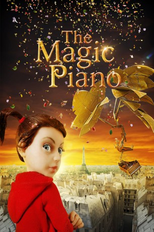

gesehen am 08.11.2018
gesehen am 08.11.2018Alternativ: Magic Piano, The gesehen am 08.11.2018
 
 IMDB-Wertung: 7.6 / 10
IMDB-Wertung: 7.6 / 10  Metascore:
Metascore: 
The Magic Piano erzählt von der kleinen Anna, deren Vater seine Heimat Polen verlassen muss, um in London Arbeit zu suchen. Anna vermisst ihn so sehr, dass sie sich auf die Suche nach ihm macht - ihren nervigen Cousin Chip Chip stets dicht auf den Fersen. Als Anna sich einmal vor Chip Chip auf einer Müllhalde verstecken will, entdecken die Kinder ein kaputtes Piano, das sich wie durch Zauberhand in eine Flugmaschine verwandelt. Und schon heben sie ab zu einem Abenteuer, das sie durch ganz Europa führen wird.
Jahr: 2011
Dauer: 34 Minuten
FSK:
Land: China Studio: BreakThru FilmsTonspuren:
Untertitel:
Auflösung: 1080p (1920x1080) Größe: 2191 MB
Genre: Abenteuer, Animation/Trick, Familie, Kurzfilm
Regisseur: Martin Clapp
Drehbuch: Geoff Lindsey, Marianela Maldonado, Robin Todd
Soundtrack: Frédéric Chopin
Darsteller:
Datei: X:\Kinder Anime\Div Anime\Magische Klavier, Das (2011, FSK, 1920x1080).mkv seit 28.10.2018
Festplatte: Kinder-Filme+Trick
 Es gibt insgesamt 40 Filme in der Gruppe 'Kinder Anime\Div Anime'
Es gibt insgesamt 40 Filme in der Gruppe 'Kinder Anime\Div Anime'